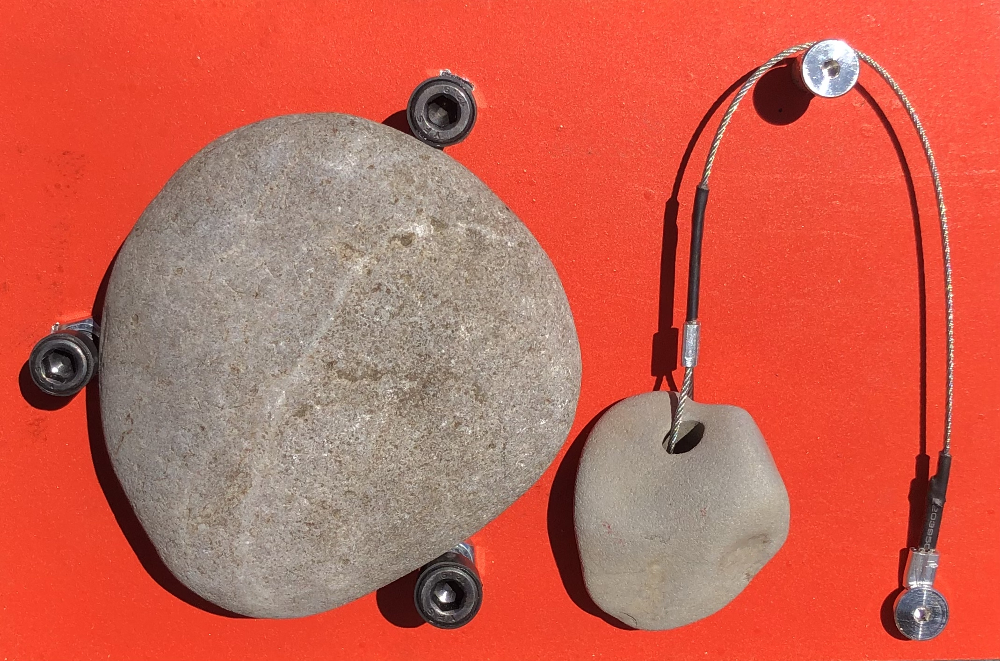

ROCKBELL
Strike one rock with another to trigger a ring. Replace a button with a mindful act.



ACHEULEAN LAB
Acheulean Lab is a design research project examining material culture.
Acheleuan Lab creates opportunities for examination, wonder, and delight in the ordinary. When the mundane is reframed as extraordinary the habitual becomes novel. Awareness of the normal leads to perception of the forces that shape our hegemonies, systems, and cultures, and critical reflection. Often, the most engaging phenomena are the inexplicable and uncertain.Through study of human response to objects Acheulean Lab aims to develop methods to build a more nurturing world.
Project Etymology:
The Acheulean Handaxe is a cordiform biface stone tool manufactured by early humans across Africa Europe and Asia during the Lower and Middle Pleistocene. In use for over a million and a half years, from 1.7 to 0.1 Mya without revision, the Acheulean Handaxe is the most successful designed object in history. Despite prolific distribution, the function these objects served is not known. The razor-sharp circumference yields an edge impossible to hold, signaling that the handaxe form is more than pragmatic. It is unclear if the tool was used for its blade, as an object of ceremony, or to convey ones status or worth. The only certainty is the consistency of its form and technique of manufacture.
The Acheulean Handaxe is the origin of design; an object produced with intent and inherited cultural knowledge. Acheulean Lab pays homage to this universal human artifact and views it as the archetype for compelling objects that offer engagement above a sensory level.
The work produced in this Lab is by nature an experiment. 2022 -
Areas of Research
Non-Graphic Interfaces Actant Objects Frameworks Unclassified ExperimentsNon-Graphic Interfaces
Possibilities for human computer interaction that do not rely on visual systems. Alternatives to the digital displays that have come to dominate information transfer.
Strike one rock with another to trigger a ring. Replace a button with a mindful act.
How does the practice of healthcare change when we emphasize sensory information over absolute measurements and values? This thermometer reminds the user to pay close attention to signals from their body, and that sickness and health are more than binary. This device produces two tones, one effected by the user’s temperature. The device is tuned so a healthy temperature will align the two sound waves and a slight fever will prevent the tones from synchronizing. Place device to forehead and listen (closely) to your body.
Actant Objects
Objects that affect or respond to their environment. Dynamism through action and reaction to prevent sterility.
Sunlight simulates a skylight. Moving light source with shifting colors to mimic the Sun's passage.
Frameworks
Systems for bilding. User defines application.
Unclassified Experiments
Projects for which a category has not yet been defined or where questions still search for their words.
A sheer and near weightless slip dress, made of a fully waterproof material. Stronger than steel by weight. Transparent armor, delicate impermeability. The wearer is fully presented but unaffected by outside forces.


...